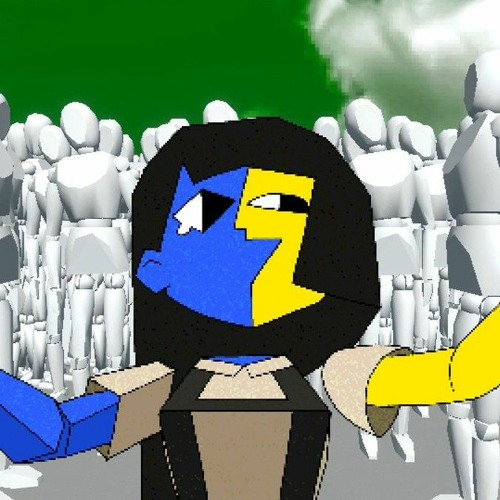
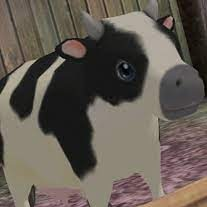
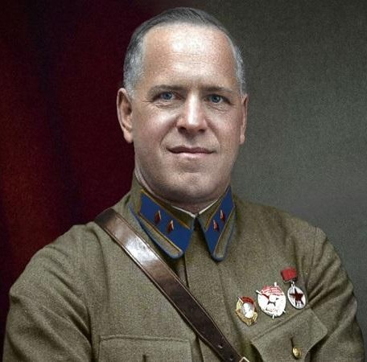
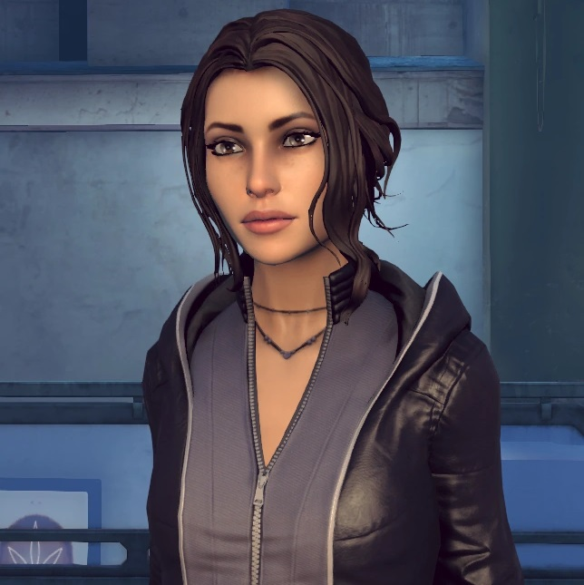

|  | ENA
Ena is my number one role model, I love her very much. She is wild, wacky, disorganised, |
|  | George
This is George, I love her very much. She is not real unfortunatly and is from a video game. |
|  | Georgy Zhukov
General Georgy Zhukov was a Soviet general during World War II. He organised the defense of |
|  | Zoë Maya Castillo
Zoë fought off and evil international company pretty much by herself. I think this is pretty |
Sleep Paralisis Demon (Dave)
He holds me tight whilst I sleep and cannot move. No harm will come to me while he is here. He knows |